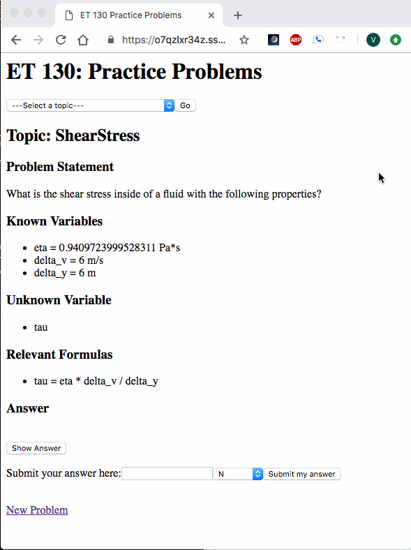
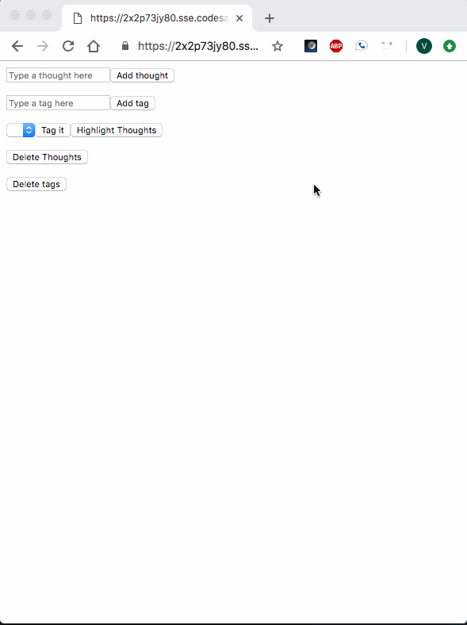
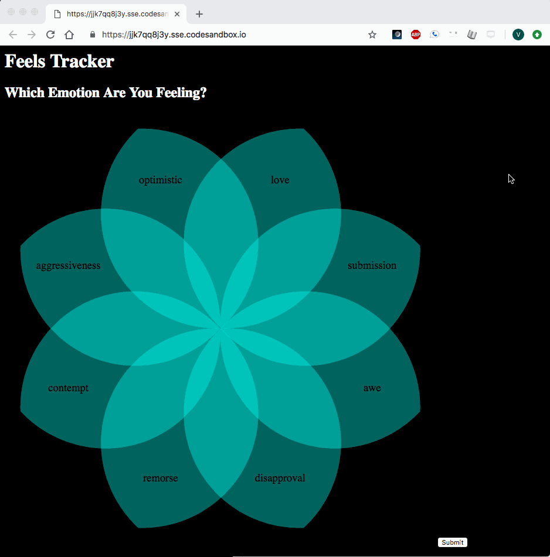
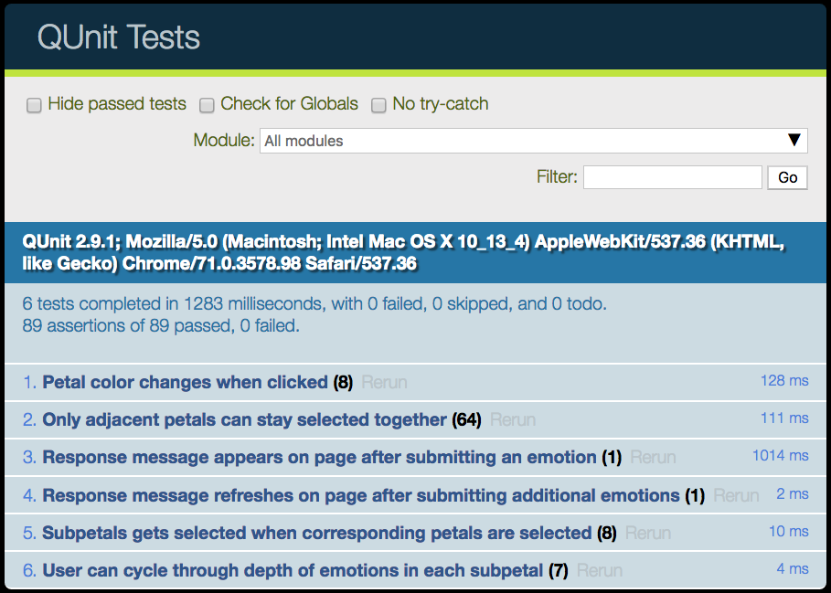

Project Journal: February 3, 2019
I was able to tackle some of the more significant tasks in my projects this past week and am proud to say that two out of the three projects' Four Week Versions were achieved! The third one (FeelsTracker) still made significant progress!
et130webapp
The four week version was to:
- Allow user to select a topic for practice problems
- Hide answer before attempting the problem
- Keeping track of their performance on the problems
Here's an example of all three elements in action!

I feel quite strongly about the success of that project, especially since my students will be able to use it this semester, hopefully before the midterm exam.
ThoughtBoard
The four week version was to:
- Keep track of old categories after assigning new categories
- Allow user to better process thought groups (than a bulleted list)
Here's an example of both elements in action!

After a slow start to this project, it has picked up a healthy pace and I'm looking forward to the Six Week Version.
FeelsTracker
The four week version was to:
- Allow users to select an emotion based on the logic of the Plutchik's Wheel
- Allow user to better process and summarize records (visually and textually)
Here's an example of the first element in action!

I continued the most wonderful experience of TDD, and was able to write, test and pass the following tests, corresponding to the user actions show in the GIF above:

The frame rate of the GIF doesn't really let you see test #4, and the subpetal emotional depth tests still need to be written and correspondingly coded, for the other 7 petals.
Additonally, I was not able to progress on the task of better visualizing the user's emotional history, which was a bulleted list in the 2 week version, and nonexistent in this 4 week version. I will be going ahead and calling this Four Week Version "done" but in reality, the tasks will just transfer over to the Six Week Version.
Speaking of Six Week Versions:
Six Week Versions
- et130webapp
- Deploy!
- Allow teacher to keep track of student progress
- Improve UI and UX to engage students
- ThoughtBoard
- Deploy!
- Allow user to save thoughtboards
- Improve UI and UX
- FeelsTracker
- Deploy!
- Allow user to process emotional history visually
I'm quite excited about these next two weeks, and look forward to having strong progress consistently throughout.